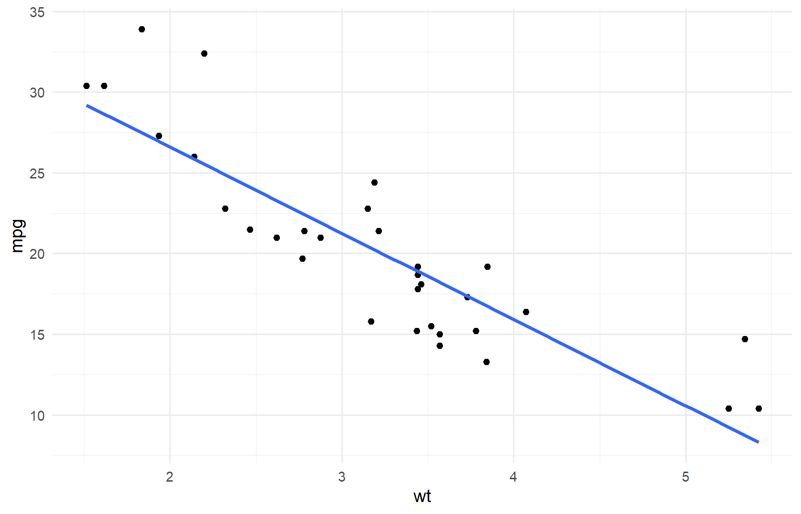

mean(mtcars$mpg)#> [1] 20.09062Une analyse n’a de valeur que si elle est compréhensible et reproductible. Quarto (et R Markdown) permettent de mêler texte, code R et résultats dans un même document source, puis de générer HTML, PDF ou Word.
.qmdAvoir Quarto installé (Section 2.7). Notions de Chapter 7.
Principe : une source → plusieurs formats. Modifier les données ou le code, puis recompiler, met à jour tables et figures automatiquement.
--- … ---)Quarto unifie R, Python, Julia et Markdown. Ce livre est lui-même un projet Quarto de type book (voir _quarto.yml).
.qmd---
title: "Mon rapport"
author: "Prénom Nom"
format: html
---
## Introduction
Texte en **Markdown**.
```{r}
summary(mtcars$mpg)
## Titres, listes, tableaux et liens
```markdown
## Titre niveau 2
- liste à puces
1. liste numérotée
[Lien interne](#sec-rapports)Tableau Markdown :
| Indicateur | Valeur |
|---|---|
| n | 32 |
| moyenne | 20.09 |
mean(mtcars$mpg)#> [1] 20.09062Options utiles dans l’en-tête du bloc : echo, eval, warning, message, fig.width, fig.height, label.
library(ggplot2)
ggplot(mtcars, aes(wt, mpg)) +
geom_point() +
geom_smooth(method = "lm", se = FALSE) +
theme_minimal()
| Option | Effet |
|---|---|
echo: false |
cache le code, montre le résultat |
eval: false |
montre le code sans l’exécuter |
include: false |
exécute mais n’affiche rien |
warning: false |
masque les warnings |
Dans _quarto.yml, la section execute: fixe les défauts du livre.
Depuis le dossier formation-r/ :
quarto preview # HTML interactif
quarto render --to html
quarto render --to docx
quarto render --to pdf # nécessite LaTeX / TinyTeX| Format | Besoin principal |
|---|---|
| HTML | Quarto + packages R utilisés |
| DOCX | Quarto (pandoc inclus) |
| Distribution LaTeX (TinyTeX recommandé) |
tinytex::is_tinytex()
# sinon : tinytex::install_tinytex()quarto render chapters/08-rapports.qmd --to html pour tester un fichier isolé (selon configuration).
theme, CSS (styles/styles.css), tocgeometry, documentclass, colorlinksreference-doc (modèle Word) si besoinLes références sont dans resources/references.bib. Citation : [@r4ds] → (Wickham, Çetinkaya-Rundel, and Grolemund 2023).
library(tidyverse)
ventes <- read_csv("data/ventes.csv", show_col_types = FALSE) |>
filter(!is.na(region))
resume <- ventes |>
summarise(
n = n(),
ca = sum(montant),
ca_moyen = mean(montant)
)
resume#> # A tibble: 1 × 3
#> n ca ca_moyen
#> <int> <dbl> <dbl>
#> 1 199 25877. 130.En produisant le document chaque semaine sur des données mises à jour, le texte descriptif et les chiffres restent synchronisés.
| Aspect | R Markdown | Quarto |
|---|---|---|
| Extension | .Rmd |
.qmd (aussi .Rmd) |
| Moteur | rmarkdown / pandoc |
Quarto CLI |
| Livres / sites | bookdown |
intégré (type: book) |
| Multi-langage | possible | natif |
| Avenir Posit | maintenu | recommandé pour nouveaux projets |
Les compétences Markdown + chunks se transfèrent presque à l’identique.
Options courantes :
outputs/book/index.htmlExemple GitHub Pages (facultatif) :
git init
git add .
git commit -m "Livre formation R"
# Configurer GitHub Actions ou pousser le site renduNe publiez jamais de données personnelles non anonymisées.
ca_total <- sum(ventes$montant)
n_ventes <- nrow(ventes)Sur la période couverte, on observe 199 ventes pour un CA total de 2.58766^{4}. Ce paragraphe se met à jour à chaque rendu.
| Problème | Solution |
|---|---|
| PDF échoue | Installer TinyTeX / MiKTeX |
| Chemin fichier introuvable | execute-dir: project dans _quarto.yml |
| Package manquant au render | Installer puis relancer |
| YAML invalide | Indentation espaces, pas de tabs |
echo: false ?outputs/mon_premier_rapport.qmd localement avec un titre, un chunk summary(iris) et rendez-le en HTML.[@tidyverse] dans un paragraphe..qmd.# Dans un .qmd :
# ---
# title: "CA par région"
# format: html
# ---
# ```{r}
# library(tidyverse)
# ventes <- read_csv("data/ventes.csv", show_col_types = FALSE)
# ventes |> count(region, wt = montant)
# ```Pour le PDF : installer TinyTeX, vérifier quarto render --to pdf, lire le log LaTeX en cas d’erreur.
Chapter 10 : rendre l’analyse interactive avec Shiny.